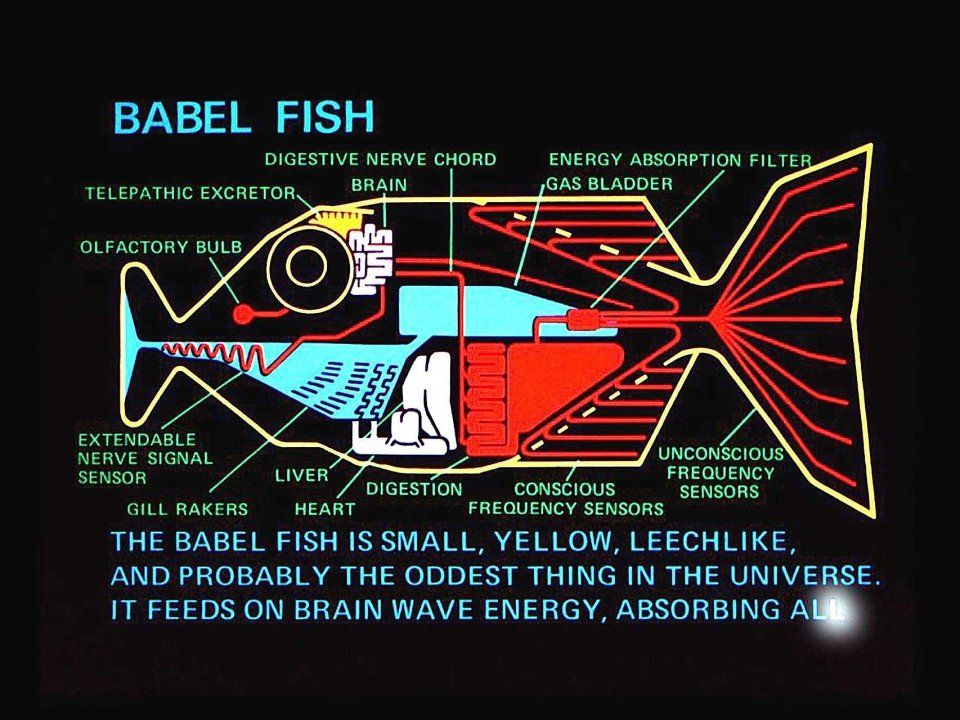

Kubernetes client-go
Wojciech Barczyński [Head of Engineering]
SMACC.io | Hypatos.ai
Kubernetes
Xubernetes

Kubernetes client-go
- Scripts
- Automations
- Operator-SDK
Kubernetes client-go
- Generated from spec
- Kubernetes json = how it looks in Golang
Set project
$ mkdir my-kube
$ cd my-kube
$ go mod init my-kube
$ go get k8s.io/client-go@kubernetes-1.15.3
Minikube for dev
$ kubectl config use-context minikube
$ kubectl get po --all-namespaces
Demo: list
func check(clientset *kubernetes.Clientset, namespace string, pod string) {
pods, err := clientset.CoreV1().Pods("").List(metav1.ListOptions{})
if err != nil {
panic(err.Error())
}
fmt.Printf("There are %d pods in the cluster\n", len(pods.Items))
Demo: do you know k8s json?
examples/create-update-delete-deploymentDemo: kubernetes.fake
- fake.go
- Exposes: Faked___ e.g.,
FakeServerVersion